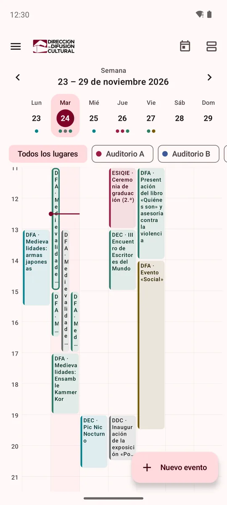

Pantalla principal
Calendario semanal
Al abrir la app ves la semana en curso, con los eventos que están ocurriendo en ese momento hasta arriba y los siguientes ordenados por día.
- “En curso ahora” muestra cuánto falta para que termine cada evento.
- Dos vistas: lista por día o cuadrícula por horas con la hora actual marcada.
- Cada lugar tiene su color y se puede filtrar el calendario por lugar.
- Los eventos que ya pasaron se ven atenuados; los cancelados, tachados.
